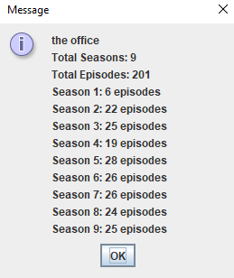

TV Show Info
This is a program that allows the user to enter in the name of a television show and then display how many seasons that show has along with how many episodes are in each season.
1. Add code to the constructor of the TVShowEpisodeDipslayer class to make a UI (User Interface) with a button and a text field for the show to search for (see below).

2. When the "Submit" button is clicked, call the getShowEpisodeData(String) method using the String from your text field.
3. Use a JOptionPane to display the String that is returned from the getShowEpisodeData method.
